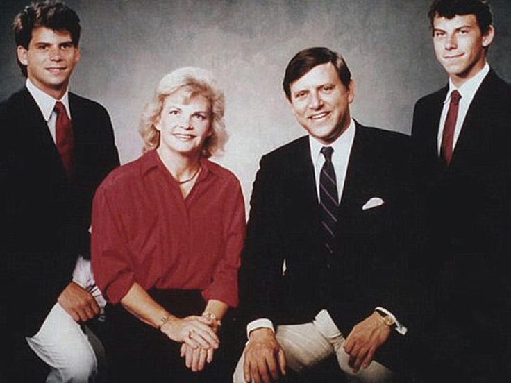

A relação entre Erik, Lyle Menendez e seus pais, José e Kitty, era marcada por uma complexidade e tensão que culminou em um dos crimes mais chocantes da história americana. Os irmãos alegaram anos de abusos físicos, emocionais e sexuais por parte de seu pai, o que teria levado-os a cometer os assassinatos. Essa dinâmica familiar disfuncional, marcada por medo, controle e desconfiança, criou um ambiente tóxico que, segundo a versão dos irmãos, os levou a um ato desesperado de autodefesa. No entanto, a veracidade dessas alegações e a natureza exata da relação entre os membros da família Menendez continuam sendo objeto de debate e controvérsia, alimentando teorias e interpretações divergentes sobre os motivos que levaram aos crimes. A complexidade dessa dinâmica familiar, marcada por amor, ódio, medo e ressentimento, é um dos aspectos mais intrigantes e perturbadores desse caso.
